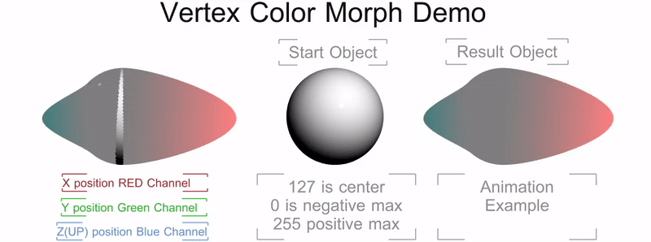
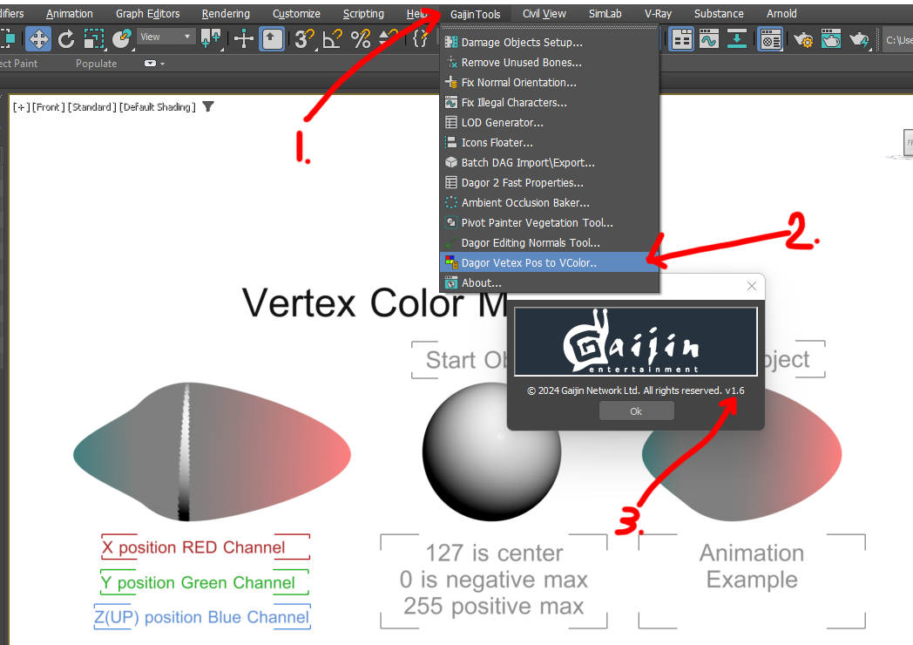
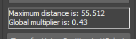
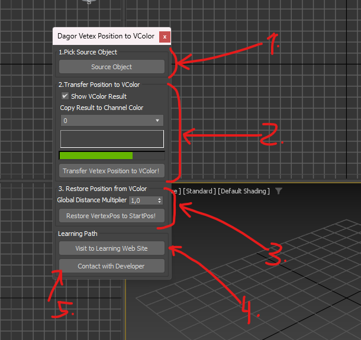
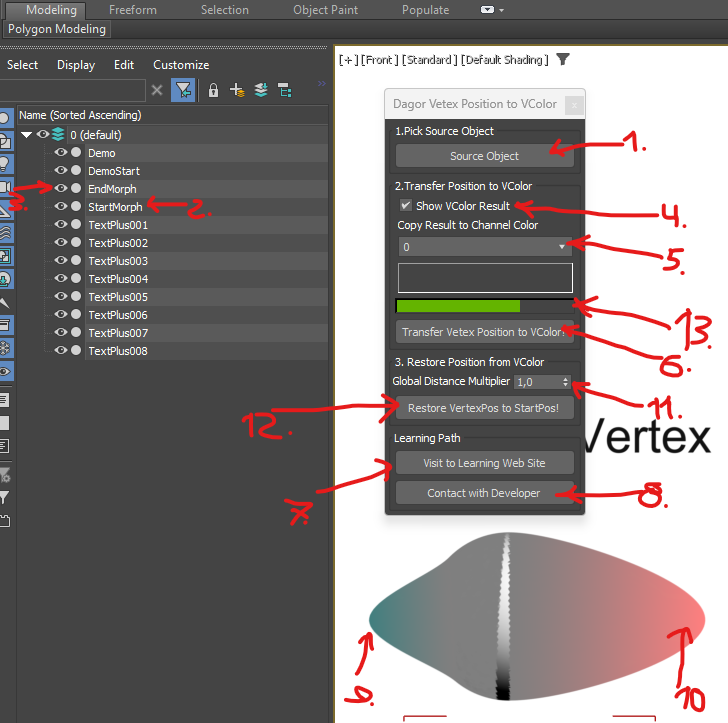
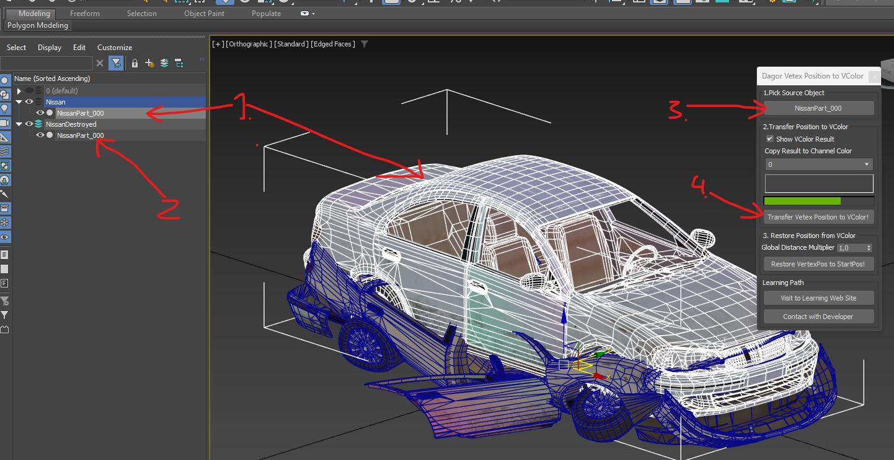
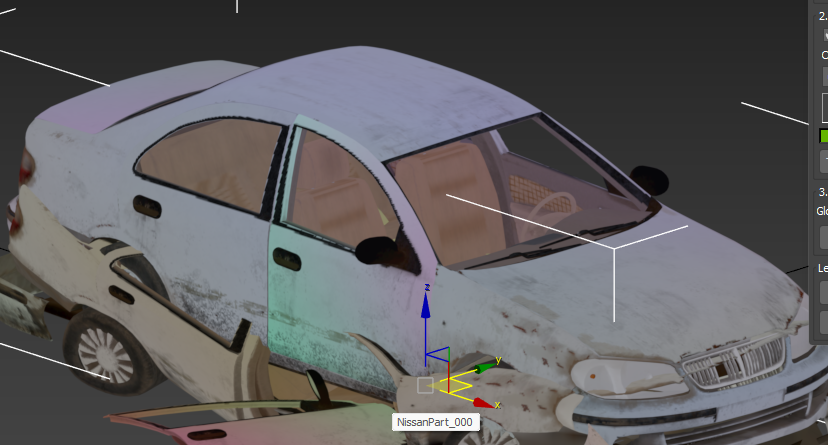
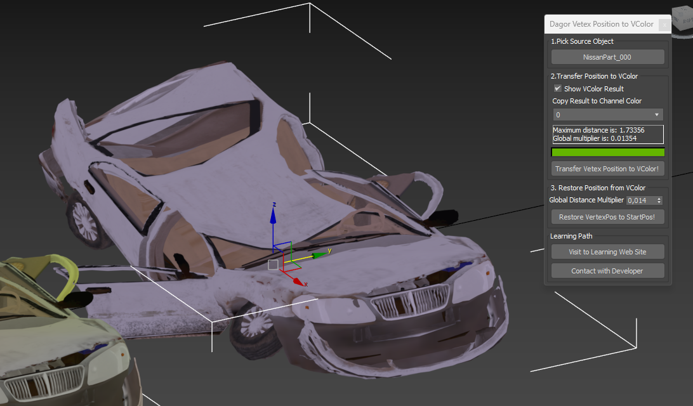
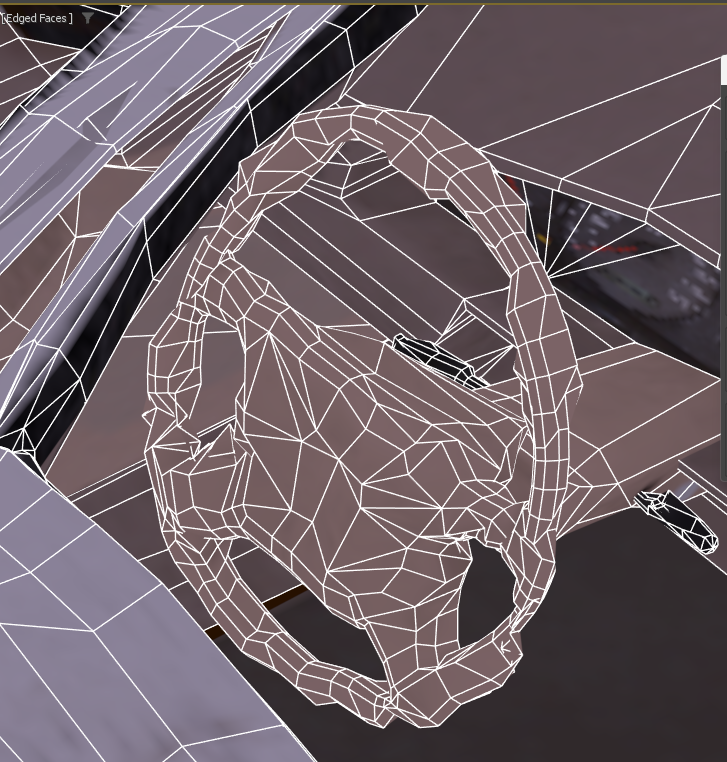

Dagor 2 Transfer Vertex Position to Vertex Color Tool
Installation
Install the script following the provided instructions.
Important
This script requires 3ds Max 2010 or newer version to run.
Overview
This tool facilitates the transfer and baking of vertex position changes from one object to another using vertex colors, enabling the creation of detailed morph effects. The tool captures the positional differences between corresponding vertices of two objects and encodes this information into the vertex color channels.
Below is an example of the tool’s output:

Accessing the Transfer Vertex Position to Vertex Color Tool
Navigate to Gaijin Tools (1) ▸ Dagor Vertex Pos to VColor…. This will open the main window of the Dagor Vertex Position to VColor Tool.
To verify the version (3) of the script, go to Gaijin Tools (1) ▸ About (2). The About window will display the current version. It’s important to check this regularly to ensure your script is up to date.

Note
Make sure that the plugin version is at least 1.6.
Using the Transfer Vertex Position to Vertex Color Tool
To begin, open the tool panel by navigating to Gaijin Tools ▸ Dagor Vertex Pos to VColor.
Download the following test scene: VColorMorphDemo.max.
Important
This scene requires 3ds Max 2024 or a newer version.
Use Case: Bent Metal Effect
The script was originally developed to create a bent metal effect, where a new car model gradually morphs into a damaged car model. Storing two full models is resource-intensive, so this tool allows us to store the positional changes as vertex color data. This approach requires that the vertex count and order in both the original and deformed models are identical.
Encoding Process
Channel Assignment:
The Red channel stores the X-axis offset.
The Green channel stores the Y-axis offset.
The Blue channel stores the Z-axis offset.
Note
The Z-axis is upward in most coordinate systems, but remember that in some systems like DirectX, the Y-axis is considered upward.
Brightness Range:
The brightness range is split into two intervals:
0-127and127-255.127represents zero offset, meaning no positional change between the original and deformed model.Values
0-126represent negative offsets, while128-255represent positive offsets.
Normalization:
To fit the positional offsets within the 128-step brightness range, normalization is applied.
The script identifies the maximum distance between corresponding vertices across both models. For example, if the maximum distance is 256 units, the script normalizes all distances using a multiplier of
256/128 = 2.0. This normalization ensures that the offsets are encoded correctly within the available brightness range. The multiplier and normalization are automatically calculated after the script processes the models, as shown in the following example:

Script Interface Overview
The script interface is divided into three main sections:
Base Object Selection (Block 1):
Select the base object, which remains unchanged and serves as the reference for positional comparison.
Choose the target object where the vertex color (vColor) data will be written.
Calculation and Output (Block 2):
Initiate the calculation and output of the positional differences.
Inverse Transformation (Block 3):
Optionally, verify the accuracy of the process by performing an inverse transformation, converting the vertex color data back into vertex positions to check for consistency.

Example Workflow
To illustrate, let’s transfer the vertex position differences from an object
named StartMorph to another named EndMorph. As EndMorph has a point offset
along the X-axis, the Red channel will reflect this shift – positive values on
one side and negative values on the other. A gray color (127, 127, 127)
indicates no positional change.
Select the Source Object:
Choose
StartMorphusing the Source Object (1) button.
Select the Target Object:
Select
EndMorph(3), the object to which vColor data will be applied.
Display the Result:
Check the Show VColor Result (4) option to display the vColor in the Viewport.
If needed, specify a different channel (5) for the output, such as channel 8 (used for Ambient Occlusion in Dagor Engine).
Start the Process:
Click the Transfer Vertex Position to VColor (6) button to begin the transfer. The resulting vColor will illustrate the deformation, as shown by the color changes in the sphere, examples (9) and (10).

This is an illustrative example when deformation of an object where the vColor has changed. In a real task, we need to transfer the position the other way around from the deformed object to the undeformed object. The selection will be inverted.
Verification
To verify the accuracy of the transformation:
Inverse Transformation:
Set the Global Distance Multiplier (11) to the value calculated during the initial process.
Select the model with the generated vColor.
Click Restore VertexPos to Start Pos (12) button to revert the vColor back into vertex positions.
The process may introduce minor distortions due to the limited precision available within the 128-step brightness range.
Prototype Car Destruction in Unreal Engine
This section demonstrates a practical application of the script for simulating car damage in Unreal Engine. You can download the Unreal Engine project from the following link:
Note
The minimum supported version for this project is Unreal Engine 4.27.
To view the results directly, you can run the executable file
CarDeformExampleWin64x\CarDeformExample.exe, example: transfer_vertex_05.gif.
Nissan Car Damage Example
For a hands-on example, you can download the scene files for a damaged Nissan car from the links below:
Note
The minimum supported version for this scene is 3ds Max 2024.
Step-by-Step Instructions
Open the Scene in 3ds Max:
The scene contains two versions of the car: a dented version (2) and an undamaged version (1).

Select the Undamaged Car:
Begin by selecting the undamaged car model (1).
Specify the Dented Car as the Target:
With the undamaged car still selected, press the selection button (3) to specify the dented car as the target for the transformation.
Run the Script:
Press the execute button (4) and wait for the script to complete its process.
The car should now display a vertex color indicative of the deformation process, similar to the example shown below:

Verify the Results:
To verify the process, make a copy of the undamaged car (1) and press the button (2) to apply the vertex color transformation.
The result should closely resemble the dented car model, as illustrated here:

Inspect for Artifacts:
Upon closer inspection, particularly around the steering wheel, you may notice minor artifacts. These artifacts are a result of compressing vertex positions into the vertex color space, as shown below:

Unfortunately, these artifacts are inherent to the technology used for encoding vertex positions in the vertex color channels. However, they are generally inconspicuous during gameplay, blending naturally with the car’s damaged appearance.
Additional Resources
Documentation: Button Visit to Learning Web Site (7) will open this article.
Contact Information: Button Contact with Developer (8) provides the developer’s contacts.